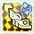

The Shitposting Guide to Hero
Note:
This guide assumes you know how to play any of the "Normal" classes. If you don't, you shouldn't be reading this guide.
Forward: Hero is an exciting new class introduced in EP5. Using Swords, Twin Machineguns, and Talises in an
exciting new and refreshing way, you too can be a lazy ass Hero!
This guide is inspired by the many various other guides for PSO2 and this Girls' Frontline guide: https://gfl.matsuda.tips/
Overview
Your character looks like shit. If you're into this class because it's totally edgy and it fits your style, read no more as this guide is not for you. If you're into this class because you can't imagine life without it, then please, keep reading. If you spot something that is incorrect, send a Pull Request. If you don't know what that is, then I guess it's not being corrected now isn't it?
Weapon Overview
The weapons used by Hero are Sword, Twin Machinegun, and Talis. However, with a twist on how they're used. Starting with Hero and other newer classes in the future, each will have a brand new animations and PAs to go long with them.
This section will cover and offer a brief explanation of the weapons of Hero.
| Weapon | Description | |
|---|---|---|
| Sword | The bread n' butter I suppose. Nothing too fancy with it, except you'll be using it more often than not. Better get used to using it, cause the both of you awe going to UmU be bwest fwends for a vewwy wong time. OwO | |
| Twin Machineguns | Long range that isn't handled by what sword doesn't already cover. Popular weapon for those who  |
|
| Talis | Duel Monsters is based upon a 5000-year-old game, it was played by Ancient Egyptians for power and was extremely dangerous. Great for the same reasons as Twin Machineguns, but unlike them, can actually deal damage. It's your move Kaiba. |
Photon Arts
The Photon Arts for Hero are classified as Advanced-type PAs. This means they're in their own separate category in-game in-between the normal Photon Arts tab and the Techniques tab. This section will list the relevant PAs on their placement as a Hero.
Sword Photon Arts
| Photon Art | Description | |
|---|---|---|
| Rising Slash | Holding this PA down can make you really good at having people look down at you. The damage per slash isn't winning any favors. And had it been an anthropomorphic character, it could have been the star of its own show. Sadly, this isn't the genre for it, though its saving grace is that the sword throw and final slam deal more damage than the continous swing. | |
| Brightness End | AoE 360 no-scope slash that gives Guard Frames. Can't say no to that. | |
| Vapor Bullet | One of the many boring PAs that you'll ever use. This single PA makes using Hero Twin Machineguns for anything else not reloading inadequate. You'll be using this on pretty much anything boss (or miniboss) related. You can move/cheese while using this PA. Also swaps to Twin Machineguns when long pressed. | |
| Flash Trick | A homing/travel PA. Can be used to quickly reach a locked on weak spot. Can also be used to quickly move about, at the cost of your PP. Long pressing will swap to your Talis. | |
| Sword Normals | Not exactly a PA, but boy does it do as much as if you were using a PA. | |
| Aura (Sword Weapon Action) | Not a PA either, but worth mentioning. Using your weapon action with sword lets you fire a stream of small bursts of photons. Can be used to regen PP. Combine with a macro to tap shift continously and you can be a lazy ass too! After unlocking and putting points into Aura High Charge on the tree, you can long press the weapon action to charge up and fire a massive blast of energy. |
Twin Machinegun Photon Arts
| Photon Art | Description | |
|---|---|---|
| Moment Trick | Deals small amount of damage, but hits 13 times per PA usage. Use twice when building up hits for Hero Time. Also useful for inflicting a status effect on a boss. Long press for swapping to Talis. | |
| Second Edge | Can deliver a high damage, incredibly short ranged, blast. Useful when you're fighting Anga and you've managed to get Talis and Sword as the resists. Long press for swapping to Sword. | |
| Weapon Action | JA this. Your PP will regen fast. For an absolute worthless TMG that isn't good for anything but reloading, use the SSAs S1: Radiating Grace and S3: Radiating Grace. Your PP regen becomes disgusting. | |
 |
All other PAs | Trash. Don't bother, not worth mentioning. They do OK AoE, but they're literal ass for bossing. Prove me otherwise. |
Talis Photon Arts
| Photon Art | Description | |
|---|---|---|
| Jet Wheel & Wise Hound | Damage wise, they're okay. Maybe it's just me and I'm using them wrong.
But they're not exactly winning here. What they're really good for, from my limited experience,
is quickly healing in a pinch. Phase 1: Tap megiverse and use either PA near an enemy. Phase 2: ? Phase 3: Profit. |
|
|  | Dive Bullet | Dodge and throw your talis, deals nice damage. Won't replace sword, but really useful for TMG and Sword resist times on Anga. Long press to swap to TMGs. |
| Racer Edge | Throws your talis and deals massive damage. Still won't replace sword. Long press to swap to Sword. | |
| Weapon Action | Teleports to warp point. Long press to charge up and send a warp point. Now you too can teleport behind others. |
Skill Tree
The Skill Tree of a Hero is a very simple tree compared to the other classes in the game. Upon unlocking Hero, you are given the following Skills automatically:
- Step JA Combo - Allows for a JA after you used Step.
- First Blood - Treats the first attack as a Just Attack, Techniques do not apply.
- Hero Mag - Converts your total attack values from your mag into Striking, Ranged and Technique.
- Step - Your basic dodge.
- Step Attack - Allows for an attack during Step.
- Just Reversal - Allows you to quickly recover after being knocked down.
- Next Jump - Allows you to double jump when using a Hero weapon.
Aside from these Skills, placing levels into Hero will give access to more Skill Points, thus allowing you to access more Skills on the Skill Tree.
Core skills from the Hero tree are as followed. These are the skills you'll want to take as soon as possible. Prioritize them first!
| Skill Name | Description |
|---|---|
| Hero Boost | At level 10, this skill gives a 60% multiplier. (Assuming you don't get hit and 60 seconds have passed) |
| Hero Counter | Allows you to gain a power bonus to your Step Attack, when you Step dodge an attack. |
| Hero Weapon Bonus 1 & 2 | The real bullshit here. Gain a huge multiplier by just having a Hero weapon equipped. |
| H. Attack Bonus | Increases the power of your Normal Attacks. NORMALS!! |
| Hero Gear / Hero Time | Enables a gear gauge and a cool active (Hero Time) that can be activated when gear gauge is filled and boosts attack power based on the damage and number of hits done. |
| HT Counter Bonus | With this enabled, simply using Hero Counter will fill your gear gauge. |
| HT Counter PP Gain | With this enabled, as long as you don't get hit upon using Hero Time, you get all of your PP refilled. Pretty neat, isn't it? |
| Hero Time Finish | This skill allows for you to manually deactivate Hero Time for a kickass finisher. Finisher varies per Hero Weapon.
|
Important skills from the Hero tree are below. Note that while they're important, they're not a pressing need to get them immediately. However, you'll want to get them after the core skills are taken.
| Skill Name | Description |
|---|---|
| Zero Range Gear Up | By attacking at close range, you can fill your gear gauge up. |
| Long Range Gear Up | Same as above, but from a distance. |
| Combo Gear Up | Increases gear gauge fill rate when you use different PAs and Techniques. |
| Aura High Charge | Turns your Sword Weapon action from small energy blasts into a large and charged energy blast when long pressing Sword Weapon Action. |
| Combo Aura Short Charge | Makes performing the above a whole lot less time consuming. |
| Hero Will | It's a shitty Iron Will that works once, but it can save your ass from dumb shit from in-game and is a guaranteed death save. |
| Step Jump | Used to be a a ring, but now it's a free skill. Doesn't use Skill Points. Allows you get a running start after a dodge by jumping. |
| Air Reversal | Used to be a ring. Now a free skill. Lets you recover quickly while you're in the air. |
| J. Reversal JA Combo | After using a Just Reversal, you can JA immediately. It's a free skill, take it. No harm in doing so. |
Optional section. These are the skills that aren't required, but totally optional and should be taken last.
| Skill Name | Description |
|---|---|
| TMG Attack PP Save | Reduces the PP cost of Hero TMG Normals. |
| H. Talis Charge Keep | When you use a Technique or a Talis Weapon Action, this lets you keep it charged temporarily when you dodge. |
| Come Again | Lets you Talis warp twice. |
| One More Jump | Mario Time. If you land on an enemy's head, you can jump again. |
| Hero Flash Guard | A damage taken reduction skill. It's pretty cool, but not needed. Take it if you like. |
| Victory Shout | A Hero version of War Cry with PP regen. |
| All other unmentioned skills | If it's not listed here, I either forgot to mention it, or I was being lazy and didn't want to keep typing forever. It's optional regardless. |
MLG Strats
General idea is to alternate weapons to generate max gear. Once gear is maxed, you can choose to pop hero time and use Moment Trick twice to generate the maximum hits needed for Hero Time, and swap to Sword to ramp up the damage before gear gauge runs out and finishing with Hero Time Sword.
Special Thanks
- Shout outs to my PSO2 team. They're the best.
- You
- Arks-Layer & Fleet Discord